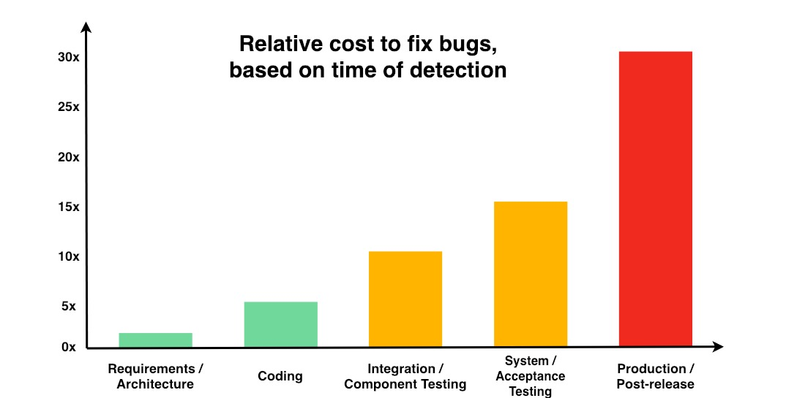
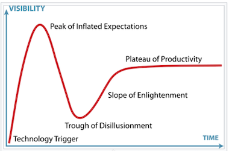

Introduction
Work in Progress
v 0.2.4 - Mar 4, 2022
This website was created by johntelford.com LLC. It is about optimizing website project life time costs using a website generator for developing and deploying websites. It is based on Iterative Development and Web Component Technologies.
Navigating Website
Info
The website is organized into chapters. Each chapter is a separate page.
Navigation
There are several methods for navigating through the chapters of the website.
The sidebar on the left provides a list of all chapters. Clicking on any of the chapter titles will load that page.
The sidebar may not automatically appear if the window is too narrow, particularly on mobile displays. In that situation, the menu icon (three horizontal bars) at the top-left of the page can be pressed to open and close the sidebar.
The arrow buttons at the bottom of the page can be used to navigate to the previous or the next chapter.
The left and right arrow keys on the keyboard can be used to navigate to the previous or the next chapter.
Top menu bar
The menu bar at the top of the page provides some icons for interacting with the website.
| Icon | Description |
|---|---|
| Opens and closes the chapter listing sidebar. | |
| Opens a picker to choose a different color theme. | |
| Opens a search bar for searching within the book. | |
| Instructs the web browser to print the entire book. |
Tapping the menu bar will scroll the page to the top.
Search
Pressing the search icon () in the menu bar, or pressing the S key on the keyboard will open an input box for entering search terms.
Typing some terms will show matching chapters and sections in real time.
Clicking any of the results will jump to that section. The up and down arrow keys can be used to navigate the results, and enter will open the highlighted section.
After loading a search result, the matching search terms will be highlighted in the text.
Clicking a highlighted word or pressing the Esc key will remove the highlighting.
Overview
Info
This website discusses optimizing website project life time costs. It describes using a site generator for developing and deploying websites. It is based on Iterative Development and Web Component Technologies.
The basic idea of Iterative Development is to develop a system through repeated cycles (iterative) and in smaller portions at a time (incremental), allowing iterative development teams to take advantage of what was learned during development of earlier parts or versions of the system.
Web Component Technologies enable creating reusable custom elements, with their functionality encapsulated away from the rest of the code, and utilized in website development.
Iterative web development teams working together can help optimizing website costs and lower some the difficulties creating websites.
Difficulties
Creating and maintaining websites that meet users needs are difficult, complex, time consuming.
Website life time cost will be higher if defects are not mitigated early.
Slow
More than half of mobile user will leave a page that takes longer than 3 seconds to load and may never return. Optimizing websites to maximize performance is important.
Content
Most People visit websites for content. They have little interest in how the content is created or how it gets to their screen. Most access websites using mobile devices. Everyone wants websites pages to load quick and pages that conform to their screen size. The website look and feel, users experience, functionality, also needs to be consistent and complement the content.
The Google PageSpeed Insights website reports on the performance of websites on both mobile and desktop devices, and provides suggestions on how pages may be improved.
Google reports mobile website pages load within 22 seconds on average. However, 53 percent of mobile users will leave a page that takes longer than 3 seconds to load.
Iterative Development Teams
Teams work together delivering their work to other teams during the website life time.
The slightest errors or security issues will require remediations sometime during the life time of the website.

Iterative website development Teams
Iterative website development enables the Define, Design, Develop, Deploy and Maintain teams to be operational at the same time creating, testing, and remediating defects.
Defect Remediation Costs
The highest cost over the life time of website projects may be remediating defects.
Content and software defects cost less when found early, as this chart shows:
Defect Remediation Costs
Some of the early defect detection mechanisms built into using a site generator are:
vscodeeditor tool extensions continually check for syntax and other errors- Fast refresh live-editing quickly show changes while typing, and any runtime errors
- Team members frequently deploying their copy of the project repository with their changes, to private websites where stakeholders can see them and give feedback.
Minimum Viable Product
The first goal of website development projects is get to a Minimum Viable Product.
It is a way to understand whether the website project idea will work or not. It is a stage in website development where the must features are implemented and ready to test with end-users. It gives feedback about the positive aspects and shortcomings.
The next steps are adding the want features, until stakeholders agree the website is production quality and ready to be deployed.
Iterative Development Teams
Info
Teams work together delivering their work to other teams during the life time of the website.
The slightest errors or security issues will require remediations sometime during the life time of the website.
Iterative Development Teams
Iterative website development enables the Define, Design, Develop, Deploy and Maintain teams to be operational at the same time creating, testing and remediating website defects.
Teams Prerequisites
Define
The Define team prerequisites are defining what the project is about, funding, purpose, functionality, stakeholders, content, must and want features, and security.
Design
The Design team prerequisites are making decisions about Website Design, Consistency, Theme, Color Scheme, Typology, Navigation, and User Interaction.
Develop
The Develop team prerequisites are: Making decisions about resources required to transform the Define and Design work into a website, and infrastructure. Making decisions about using a site generator and programming tools.
Deploy
The Deploy team prerequisites are: Making decisions about resources required for deploying production version of the website to the Internet. Making decisions about resources are required for team developers working on features, fixes, or testing to deploy private Internet websites with their changes, without disturbing other developers work or the production version.
Maintain
The Maintain team prerequisites are: Making decisions about remediating deployed websites Define, Design,Develop, Deploy, or Security defects. Organizing members from other teams to be part of the Maintain team while remediating specific defects.
Define Team
Info
Defining websites helps the Iterative Development teams and stakeholders understand of the project.
Defining website prerequisites is the first steps in optimizing website costs.
Prerequisites
Websites Define prerequisites are what the project is about, including:
- Purpose
- Project Funding
- Website Type
- Stakeholders
- The Musts and Wants Functionality
- Website Media
- Security
Purpose
Knowing the purpose of the website project enables Iterative Development teams to separate goals into musts and wants
Project Funding
Project funding is a primary factor in the success of website projects. It enables teams to have skilled people, equipment, and tools.
Website Type
Is the website:
- Brochureware ?
- Commerce ?
- Something else ?
Stakeholders
Who are the stakeholders?
The Iterative Development teams deploy private websites for stakeholders review while creating new, updating, fixing, or exploring new features.
Musts and Wants Functionality
-
When stakeholders agree the website Musts functionalities are operational, then it is a Minimum Viable Product and ready for testing.
-
When stakeholders agree the website Wants functionalities are operational, the website is production quality and ready to be deployed to the Internet.
Website Media
-
What is the website message ?
-
What existing and new website media will be in website pages?
Security
- What are the website security needs?
Design Team
Info
Website Design is creating the website look and feel. Useful websites require the user experience and functionality be consistence and complement the content.
Overview
The core foundations of a user's website experience are:
-
Fast - Website responds quickly to user interactions with smooth scrolling.
-
Integrated - The website uses the full capabilities of the user device to create an experience true to the device.
-
Reliable - Loads quickly and reliably even in uncertain network conditions.
-
Engaging - Keeps user coming back to a website that is designed to look and feel natural.
Prerequisites
Website design prerequisites are making decisions about:
- Responsive Website Design
- Consistency
- Theme
- Color Scheme
- Typology
- Navigation
- User Interaction
I have reincarnated JohnTelford.com using several of these and other Development Frameworks. The last two reincarnations have been:
Docusaurus

The perquisites requirements for this website can be realized using the Docusaurus development framework. Any of the Docusaurus attributes may be changes.
The website design prerequisites can be realized using the Docusaurus development framework.
mdBook
The mdbook uses markdown with imbedded HTML. It does not abstractReact
This website is Brochureware. I found it was faster, cleaner, and less complicated to create it using mdbook.
Summary
Docusaurus
Using Docusaurus for user interface and material because it abstracts react. Use mdx and jsx to creating more complex user interfaces .
mdBook
mdBook is a command line tool to create books with Markdown. It is ideal for creating product or API documentation, tutorials, course materials or anything that requires a clean, easily navigable and customizable presentation.
- Lightweight Markdown syntax helps you focus more on your content
- Integrated search support
- Color syntax highlighting for code blocks for many different languages
- Theme files allow customizing the formatting of the output
- Preprocessors can provide extensions for custom syntax and modifying content
- Backends can render the output to multiple formats
- Written in Rust for speed, safety, and simplicity
mdBook Documentation is an example of what mdBook produces. The Rust Programming Language book is another example of mdBook in action.
Responsive Website Design
The majority of users access websites using mobile devices. They and others have little tolerance for slow loading website pages or pages that do not conform to their screen size.
-
Website design
- Ensures pages load quickly
- Website pages are display correctly on a variety of devices and window or screen size
- The website look and feel, users experience, and functionality are consistenly maintain.
-
Consistency
Website consistency is the look and feel of the site. The users experience, and functionality does not vary between website pages.
Theme
The website theme is:
- Color scheme
- Header
- Pages
- Fonts
- Footer
- Typology
- Navigation
- User interaction
Develop Team
Info
The Develop team translates the Define and Design processes into website pages using abstract logical structures, rigid nonhuman website programming languages, and a variety of tools. The slightest errors or security issues will require remediation sometime during the life time of the website.
Prerequisites
The Develop team prerequisites are making decisions about resources required to transform the Define and Design work into a website, and infrastructure. This includes the site generator
Developer Iterative Development Stack
Info
The Iterative Development Stack deploys websites to the Internet. It is device agnostic. What works for big screens, works for small screens.
Developer Iterative Development Stack
VScode

Info
Visual Studio Code (VScode) is a Microsoft product.
It has become the goto editor for many. It is free, built on open source, and runs everywhere.
VScode is the command and control center for the website project.
Some of the development command and control tasks are:
- Editing code and website media
- Use
gitandGitHubto manage project files.Gitis built-in and optimized to work with MicrosoftGitHub - Editor tool extensions continually check for syntax and other errors
- Live edit browser previews show how edits will look when deployed
- Deploy secure website previews to the Internet for stakeholders
- Deploy production website to the Internet
- Built-in command shell
- And much more
git
Info
Git is a free and open source distributed version control system designed to handle everything from small to very large projects with speed and efficiency.
Git is easy to learn and has a tiny footprint with lightning fast performance. It outclasses SCM tools like Subversion, CVS, Perforce, and ClearCase with features like cheap local branching, convenient staging areas, and multiple workflows.
GitHub
Info
All developers need a GitHub account. It is a Microsoft company
GitHub is a Distributed Version Control Systems (DVCS) enabling multiple developers or teams to work separately without having an impact on the work of others. GitHub is a central online web hosted project repository for all project files. It is a unified source of truth. It helps teams collaborate and maintain the entire history of project file changes. Teams can view history of all changes and go back to previous file versions.
Info
It helps answer the questions who changed what, where, when, and why?
All team members have their own local copy of the central project repository. They make changes, fix defects, add new features to their repository, without interfering with others team members, or the central repository.
Team members may deploy their copy of the repository with their changes, to a private Internet website for stakeholders to see and give feedback.
If the central online repository dies, a client repository can be copied back up to the server to restore it.
When stakeholders determine some changes, defect fixes, or new features are ready, they will be committed to central project repository, and team members update their local copy by pulling central repository changes into their local repository. This process keeps team members up to date.
Cloudflare

Cloudflare Global Content Delivery Network (CDN) deploys website to the Internet.
Cloudflare builds a website and deploys it when git pushes changes from the Local Repository to the Central Repository, Cloudflare then automatically builds the website and deploys it to the Internet.
Cloudflare can be configured to deploy public production and private development versions of the website.
Developer Iterative Development Stack Example
The ULTIMATE GUIDE TO USING GIT - With Visual Studio Code will guide you to installing and learning git, and installing Visual Studio Code and so much more.
GitHub account
The Iterative Development Stack depends on users having a GitHub account.
Developer Workflow
-
Create a new project directory.
-
Create and edit website project files.
-
Follow the ULTIMATE GUIDE TO USING GIT - Create New Git Repository instruction.
A local repository is on your workstation and a central repository on GitHub.
-
Continue editing website project files.
-
Every so often
commityour changes. This insures you have a copy of the project file and project history, stored offsite in the central repository. If your workstation dies, you can quickly create a local directory on your new and improved workstation from the remote repository. -
See the ULTIMATE GUIDE TO USING GIT . - Commit a Change to Git
Website Workflow
-
Website
mdBookfiles are created and edited in the local repository. -
The
mdBook servecommand renders project file edits in a browser. If viewing the page being edited, it will be updated in near real time. -
The next step is to commit file changes. The
VScodegitworks with GitHub to update the central repository with the local repository file changes. -
Cloudflareis notified by GitHub when the project central and deploys a website.
Team Iterative Development Stack Workflow
The Team Iterative Development Stack is the same as Developer Iterative Development Stack. The difference is there are more than one developer. There would be confusion and possible defects created if the developers were to directly make changes to the same repository.
A solution to this problem is to have one central repository controlled by a gatekeeper. Each team member forks a copy to their GetHub account and makes a git clone of it on their workstation.
Each developer makes changes to their git clone repository. They cannot directly make changes to the central repository. Team members may deploy their copy of the clone repository with their changes, to a private Internet website for stakeholders to see and give feedback.
This process is managed using Microsoft free Git Hub for Teams product. When stakeholders determine a developers changes, defect fixes, or new features are ready, a GitHub pull request is made by the developer to the central project repository. Project team members and the gatekeeper are notified by GitHub of the pull request. They may examine, comment on, suggest possible changes, and possibly test the code. When the team agrees on the developers changes, they are committed to the central project repository by the gatekeeper. This process is repeated for each developer changes. Iterations of the central project repository may be deployed by the gatekeeper to a private website for stakeholders viewing.
The next step is each developer pulls the central repository changes and commits them to their copy of the central project repository. This process keeps team members up to date
The central project repository may be deployed to the public Internet by the gatekeeper after stakeholders agree there have been sufficient iterations.
Maintain
Info
Maintain is remediating Define, Design,Develop, Deploy, or Security problems.
Members from all of the teams may be on the Maintain team to solve defects.
Web Components
Info
Web Development Components For The Component Era. Web Components are independent and reusable bits of code. They serve the same purpose as JavaScript functions, but work in isolation.
Web components are A set of web platform APIs that enables creating new custom, reusable, encapsulated HTML tags to use in web pages and web apps.
Based on existing web standards. They enable web developers to extend HTML with new elements with encapsulated styling and custom behavior.
React
React is for building user interfaces (UIs). It is an open-source, front end, JavaScript library created by Facebook.
React is a declarative, efficient, and flexible JavaScript library. It enables creating complex UIs from small and isolated pieces of code called “components”.
React code is made of entities called components. Components can be rendered to a particular element. A component is the core building block of a React application. Every component resides in the same space, but works independently from one another and merges all them in a parent component, which is the final UI of the application."
React JSX

The core development technology of Docusaurus and React is JavaScript. React has created JSX, a syntax extension to JavaScript. JSX is not part of the web programming languages troika. Browsers do not understand JSX. React created a compiler to transform JSX code into standard JavaScript at build time.
JSX (JavaScript XML), is a React syntax extension to the JavaScript language. It is similar to a template language, but it has full power of JavaScript. It is similar in appearance to HTML, JSX provides a way to structure component rendering using syntax familiar to many developers. React components are written using JSX.
React embraces the fact that rendering logic is inherently coupled with other UI logic: how events are handled, how the state changes over time, and how the data is prepared for display. Instead of artificially separating technologies by putting markup and logic in separate files, React separates concerns with cohesive components that contain both.
MDX

MDX is Markdown for the component era. It enables seamlessly writing JSX in Markdown documents. It is compiled to JSX components, It enables using Markdown’s terse syntax for writing website media, and JSX for components.
Markdown is a faster way of creating and maintaining website material. It is a HTLM abstraction that is compiled to web standard HTML
John Gruber published the original Markdown Syntax Guide. Different flavors of Markdown have evolved since then.
"Markdown is a better way to write HTML. It is compiled into HTML at deploy time. Markdown is a lightweight plaintext markup language used to add formatting elements to documents. Markdown is now one of the world’s popular markup languages. Using Markdown is different from using a WYSIWYG editor. In an application like Microsoft Word, you click buttons to format words and phrases, and the changes are visible immediately. Markdown is not like that. In a Markdown-formatted file. Markdown syntax is added to the text to indicate which words and phrases look different."
Markdown has been characterized by an informal specification and a reference implementation for conversion to HTML. Over time, many Markdown implementations have appeared. They are driven by the need for additional features like tables, footnotes, definition lists, and HTML inside Markdown blocks. The behavior of additional features diverge from the reference implementation and informal specification, and have attracted attention. Not all flavors of Markdown are compatible or supported by all frameworks.
I'm hesitant creating website material without using a version of Markdown. My preference is using MDX.
❤️ Powerful: MDX blends markdown and JSX syntax to fit perfectly in React/JSX-based projects.
💻 Everything is a component: Use existing components inside MDX file and import other MDX files as plain components.
🔧 Customizable: Decide which component is rendered for each markdown element.
📚 Markdown-based: The simplicity and elegance of markdown remains, JSX is interleaved when you want to.
🔥 Blazingly blazing fast: MDX has no runtime, all compilation occurs during the build stage."
React
React JSX
MDX
Tools
Hardware
The primary hardware tools for website developers are Workstations. They need to be fast, reliable, supportable, secure, support large or multiple screens, and work with website software development applications
Software
Some tools that help detect software defects early are:
vscodeextensionsSiteLinkCheckerappForkis a quick way to checks repository commits and file changes
iA Writer
Editing Markdown / MDX website pages and blog posts using iA Writer seems to be faster because of focus and grammar features with live preview.
- iA Writer is a Markdown Writing app:
- Faster way to write MDX website media
- Extensive Style Check
- Focus
- Sentence
- Paragraph
- Available for Mac, iOS, Windows, and Android
When one or more pages have been edited using iA Writer, the ChronoSync app can be used to synchronize files from iA Writer to vscode or visa versa. Since the iA Writer files are store in iCloud, they can be edited remotely using laptops, smart phones, or pads.
Web Components
Info
Web Development Components For The Component Era. Web Components are independent and reusable bits of code. They serve the same purpose as JavaScript functions, but work in isolation.
Web components are A set of web platform APIs that enables creating new custom, reusable, encapsulated HTML tags to use in web pages and web apps.
Based on existing web standards. They enable web developers to extend HTML with new elements with encapsulated styling and custom behavior.
React
React is for building user interfaces (UIs). It is an open-source, front end, JavaScript library created by Facebook.
React is a declarative, efficient, and flexible JavaScript library. It enables creating complex UIs from small and isolated pieces of code called “components”.
React code is made of entities called components. Components can be rendered to a particular element. A component is the core building block of a React application. Every component resides in the same space, but works independently from one another and merges all them in a parent component, which is the final UI of the application."
React JSX
The core development technology of Docusaurus and React is JavaScript. React has created JSX, a syntax extension to JavaScript. JSX is not part of the web programming languages troika. Browsers do not understand JSX. React created a compiler to transform JSX code into standard JavaScript at build time.
JSX (JavaScript XML), is a React syntax extension to the JavaScript language. It is similar to a template language, but it has full power of JavaScript. It is similar in appearance to HTML, JSX provides a way to structure component rendering using syntax familiar to many developers. React components are written using JSX.
React embraces the fact that rendering logic is inherently coupled with other UI logic: how events are handled, how the state changes over time, and how the data is prepared for display. Instead of artificially separating technologies by putting markup and logic in separate files, React separates concerns with cohesive components that contain both.
MDX
MDX is Markdown for the component era. It enables seamlessly writing JSX in Markdown documents. It is compiled to JSX components, It enables using Markdown’s terse syntax for writing website media, and JSX for components.
Markdown is a faster way of creating and maintaining website material. It is a HTLM abstraction that is compiled to web standard HTML
John Gruber published the original Markdown Syntax Guide. Different flavors of Markdown have evolved since then.
"Markdown is a better way to write HTML. It is compiled into HTML at deploy time. Markdown is a lightweight plaintext markup language used to add formatting elements to documents. Markdown is now one of the world’s popular markup languages. Using Markdown is different from using a WYSIWYG editor. In an application like Microsoft Word, you click buttons to format words and phrases, and the changes are visible immediately. Markdown is not like that. In a Markdown-formatted file. Markdown syntax is added to the text to indicate which words and phrases look different."
Markdown has been characterized by an informal specification and a reference implementation for conversion to HTML. Over time, many Markdown implementations have appeared. They are driven by the need for additional features like tables, footnotes, definition lists, and HTML inside Markdown blocks. The behavior of additional features diverge from the reference implementation and informal specification, and have attracted attention. Not all flavors of Markdown are compatible or supported by all frameworks.
I'm hesitant creating website material without using a version of Markdown. My preference is using MDX.
❤️ Powerful: MDX blends markdown and JSX syntax to fit perfectly in React/JSX-based projects.
💻 Everything is a component: Use existing components inside MDX file and import other MDX files as plain components.
🔧 Customizable: Decide which component is rendered for each markdown element.
📚 Markdown-based: The simplicity and elegance of markdown remains, JSX is interleaved when you want to.
🔥 Blazingly blazing fast: MDX has no runtime, all compilation occurs during the build stage."
Workstations
Info
The key hardware for website developers are workstations
Web site development is not easy, time consuming, and expensive. Optimizing the web development environment is critical.
The key hardware for web developers are workstations. They need to be fast, reliable, supportable, secure, support large screens, and work with web software development applications
The contemporary choice for web development workstations are Apple, Linux, and Microsoft. I have experience building websites with purchased and building bare metal Linux systems and bare metal Microsoft systems. I use apple products for exploring Internet technologies and creating web sites.
Traditionally companies built workstation products with Intel processors. They are diversifying their product line with ARM-based processors
Apple

Apple is a computer manufacturing company delivering workstation products with Apple developed macOS certified UNIX operating systems.
Apple recently released the first Mac products built with the ARM-based, Apple silicon designed, processors, and the macOS Big Sur operating system engineered to use M1 chip capabilities.
The last Apple processor transition was the Motorola 68000 to the Intel x86. It took time for Apple vendors and users to update their hardware and software to run on the x86. Apple created the Rosetta translation application that ran Motorola 68000 binary code on x86 machines. The M1 translation layer Rosetta 2, is about 80% the speed of the of native Apple Silicon code. The single-core Rosetta 2 benchmark running on a low end M1 MacBook Air with 8GB of RAM, is faster than other x86 Mac machines in single core benchmark. The M1 MacBook Air running native is faster than any competitors top of the line x86 machine, except for a couple.
Apple products prices may be higher than their competitors. It is mitigated by the quality of hardware and software, robustness, security, and vendor support.
Any unnecessary web developer workstation downtime is expensive. The advantages of Apple products are robustness, reliability, security, speed, vendor hardware and software support, and relative ease to use. Apple has responsibility for maintaining hardware and software products from sale to retirement. Apple Stores and other services are equipped to diagnose and repair Apple products.
Operating systems updates have been free for years, and Apple continues to have the highest customer satisfaction in the industry.
Linux
Linux is an excellent example of free and open-source software collaboration. The source code may be used, modified and distributed commercially or non-commercially by anyone under the terms of its respective licenses
Linux is the leading operating system on web servers. Its greatest success in the consumer market is mobile device. Android being one of the dominant smartphones Linux-based operating system
There are a some Linux vendor supported hardware platforms or Linux software distributions. The diversity of Linux distributions means that not all software or hardware runs all distributions or applications. Software and software repositories may be specific to a particular distribution
Not all peripheral device vendors support Linux. The Linux open-source community supplies several missing device drivers.
The price of Linux-based systems is attractive. The operating system software is free. Ready-made hardware platforms are available, or can be bare metal built by choosing hardware and software components, and having the skills to assemble and maintain them.
The robustness, reliability, security, and speed of Linux systems varies from low to high, depending on the knowledge and skills of the vendors, builders and maintainers
Responsibility for maintaining Linux workstation hardware, operating systems, and device drivers is fragmented or doesn't exist, except from the vendors, builders and maintainers
There are computer repair services that are equipped to diagnosed and repaired Linux systems, but not to the extent of Apple Stores
Microsoft

Microsoft is primerly a software development company. Microsoft Windows is a proprietary graphical operating system developed and marketed by Microsoft. Windows is the most used operating system on servers, personal computers desktops, laptops, and game consoles. Microsoft also manufactures Surface laptops and Xbox.
Many companies sell hardware platforms with Microsoft Windows installed. Many peripheral device vendors support Windows drivers.
Consumer versions of Windows were originally designed for ease-of-use on a single-user PC without a network connection, and did not have security features built in from the outset. Windows updates are regularly improving security.
Windows is one of hackers prime data hunting grounds, even with frequent security updates. Windows systems are everywhere and stores or has access to vast amounts of data. There are Windows installations that do not keep Windows updated. One reason may be issues with updates. Microsoft Windows update problem 2021 are recent examples.
The reliability, robustness, security, and supportability of Microsoft systems varies from low to high, depending on the knowledge and skills of vendors, builders and maintainers. The combinations and permutations of vendor hardware platforms, software applications, and peripheral vendors and device support, may be contributing to Microsoft Windows update problems.
There are computer repair services that are equipped to diagnosed and repaired Windows systems, but not to the extent of Apple Stores.
Programming
Languages
Info
The troika of HTML, CSS, and JavaScript website programming languages have become standard for creating website pages, They are interpreted and rendered by web browsers.
The job of a website development frameworks is to compile the troika and non troika programming languages, such as MDX and JSX, into a combination the standard troika languages to be executed in web browsers.
Hypertext Markup Language (HTML)
HTML is used to create websites. It is the standard markup language for browser website pages. It defines the content and structure of website pages. HTML can be assisted by Cascading Style Sheets (CSS) to instruct browsers how elements are to be styled and rendered, and JavaScript is for user interactivity.
JavaScript
Not to be confused with the Java programming language.

JavaScript Used to make webpages interactive. It is the programming language of the web. It is the most popular website programming language choice for the million of programmers globally. It is a high-level language, flexible and expressive enough to write website applications. It has many advantages. It is dynamically typed, requires no compile step, and has a huge ecosystem that provides powerful frameworks, libraries, and other tools. JavaScript is one of the core technologies of website troika website programming. It enables interactive web pages and is an essential part of web applications. All contemporary web browsers have a dedicated JavaScript virtual machine built-inn to execute it.
CSS

CSS (Cascading Style Sheets) is a stylesheet language used to describe the presentation of a document written in HTML
CSS instructs browsers how elements are to be styled and rendered.
JSX
JSX (JavaScript eXtended) is a statically-typed syntax extension to JavaScript. It enables writing HTML in JavaScript. JSX converts HTML tags into React elements. It is compiled to JavaScript.
MDX
MDX is Markdown for the component era. It enables seamlessly writing JSX in Markdown documents. It is compiled to JSX components, It enables using Markdown’s terse syntax for writing website media, and JSX for components.
Markdown is a faster way of creating and maintaining website material. It is a HTLM abstraction that is compiled to web standard HTML
John Gruber published the original Markdown Syntax Guide. Different flavors of Markdown have evolved since then.
"Markdown is a better way to write HTML. It is compiled into HTML at deploy time. Markdown is a lightweight plaintext markup language used to add formatting elements to documents. Markdown is now one of the world’s popular markup languages. Using Markdown is different from using a WYSIWYG editor. In an application like Microsoft Word, you click buttons to format words and phrases, and the changes are visible immediately. Markdown is not like that. In a Markdown-formatted file. Markdown syntax is added to the text to indicate which words and phrases look different."
Markdown has been characterized by an informal specification and a reference implementation for conversion to HTML. Over time, many Markdown implementations have appeared. They are driven by the need for additional features like tables, footnotes, definition lists, and HTML inside Markdown blocks. The behavior of additional features diverge from the reference implementation and informal specification, and have attracted attention. Not all flavors of Markdown are compatible or supported by all frameworks.
I'm hesitant creating website material without using a version of Markdown. My preference is using MDX.
Languages
HTML
JavaScript
CSS
JSX
MDX
Company
Info
I am the sole proprietor of JohnTelford.com LLC, a technology consulting company working with client development projects for more that 30 years.
Nuggets
Way back when the Internet web browsers and programming languages came along, I became interested in web technologies, and began learn by doing technology deep dives. I have years of learning ever changing Electronics, Software, and Web technologies by hands-on experiencing the technologies du jour.
I have a passion pursuing what’s new and improved with these industries. Checking out what’s new or not, a pipe dream or not, or what’s new and improved, is like panning for gold. Buried within the mountains of info rubble produced daily, every so often one finds interesting technology nuggets making the effort worthwhile. I use the Hype Curve as a guide.
I am an Electronics, Software, and Web Engineer specializing in website hardware and software technology disciplines:
- Architecture
- Development
- Deployment
Contact
Info
A labyrinth symbolizes possible difficulties reaching website project goals. Knowledge and experience with website technology disciplines may be helpful.

John Telford
Portland, Oregon
JohnTelford.com LLC
phone:text 503-312-7248
Hype Curve
Info
The Hype Curve helps separate reality from fiction.

Hype Curve
Points of Interest
The Hype Curve points of interest are:
Technology Trigger
A potential technology breakthrough happens.
Peak of Inflated Expectations
Early publicity produces a number of success stories and often accompanied by stories of failures. Some companies may take corrective action but most don’t.
Trough of Disillusionment
Interest wanes as experiments and implementations fail to deliver on the hype.
Slope of Enlightenment
Technology consumers begin to understand the technology better and how it may benefit them.
Plateau of Productivity
Mainstream adoption starts to take off. Some technologies making it to the Plateau of Productivity may be doomed to the spiral of death by inattention to details of keeping products alive.
Blog
Click to view Tech Talk John Blog
Colophon
static-site generators
Info
The troika of HTML, CSS, and JavaScript website programming languages have become standard for creating website pages, They are interpreted and rendered by web browsers.
The job of a static-site generator is to compile the troika and non troika programming languages such as Markdown, into a single file containing a combination of standard troika languages that will be executed in web browsers.
The web browser loads the single file that is the website once from the website server and executes it.
mdBook
mdBook is a static-site generator used to create and maintain the Johntelford website. mdBook is a single-page application command line tool to create books with Markdown. It is ideal for creating documentation, tutorials, course materials or any brochureware that requires a clean, easily navigable and customizable presentation. It does not use React.
Docusaurus
Docusaurus is a static-site generator used to create and maintain the TechTalkJohn blog. It builds a single-page application with fast client-side navigation, leveraging the full power of React to make websites
Website Text Material

The Johntelford and TechTalkJohn websites use these application to create and maintain website Markdown text material.
iA Writer
iA Writer offers a unique writing experience that lets you concentrate and clarify your message. Used by half a million people worldwide, its powerful interface is crafted to cut out noise, let you focus on what you want to say, and help you structure and trim your text.
iA Writer is a mirror of the website Markdown text material in the Local Repository, and where text material is changed or new text material is created., and kept synchronized using ChronoSync. Sometimes in the heat of development or defect remediation, changes are made to files on the Local Repository. iA Writer needs to be synchronized with the Local Repository changes using ChronoSync.
Taio
A modern app for text processing on iPhone, iPad, and Mac, provides seamless experience for clipboard, markdown editing and text workflows.
Trio and iA Writer have similar functionality. Trio value added is being able to edit iA Writer files using iPhone, iPad, and Mac locally or remotely.
ChronoSync
ChronoSync is a comprehensive toolkit for performing file synchronization, data backup and system bootable backups on your macOS computer.
Development Stack
Developer Iterative Development Stack